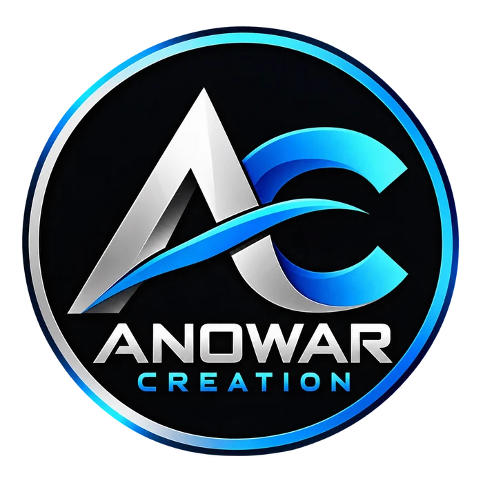

PDF Front Page Maker
Create an assignment front page with college and student details.
Use Tool →
ANOWARCREATIONDigital Service PortalFree and practical document utilities for everyday study and office work. Tools open inside the existing customer portal.
Use supported tools in the customer portal. Some advanced tools may be marked as unavailable.
Create an assignment front page with college and student details.
Use Tool →Combine image files into a PDF document.
Use Tool →Render a PDF into JPG images.
Use Tool →Combine multiple PDF files into one document.
Use Tool →Save chosen page ranges as a new PDF.
Use Tool →Re-save a PDF; large size reduction is not guaranteed.
Use Tool →Rotate PDF pages and download a result.
Use Tool →Add page numbers to PDF pages.
Use Tool →Add a text watermark to PDF pages.
Use Tool →Inspect PDF metadata in the browser.
Use Tool →Visit the service list for applications, printing and digital help.